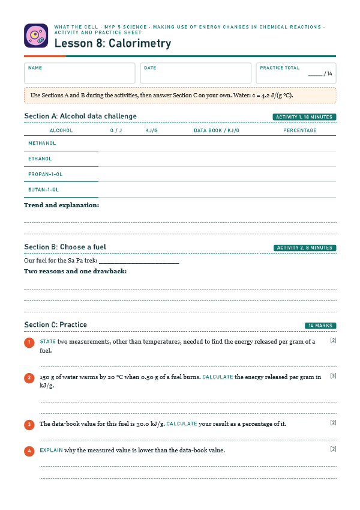

By the end of the lesson you can
- Describe how a fuel calorimeter works
- Calculate the energy released per gram of fuel
- Explain why measured values are lower than data-book values
- Compare fuels using energy per gram
Keys: arrows or a presentation clicker move the slides, F for full screen. Slides with a red dot have a video or simulation.
Videos (all 5 minutes or less)
- 3:47
Calorimeter
FuseSchool. What a calorimeter measures and why the result is lower than the true value. Slide 7.
Simulations
- Lab
Energy Changes Lab: fuel calorimetry
What the Cell. Burn four alcohols and candle wax under a can of water; switch the draught shield and lid on and off.
Print and practise

Activity and practice sheet
Used in the lesson’s activities, with practice questions. Your teacher has the answers.
Download (PDF)Lesson 8 slides
All 20 slides in one file, to read again or print. The video buttons on the slides open YouTube.
Download the slides (PDF)Revising? The Revision tab on the unit page has the unit notes and review.
Notes: Calorimetry
The fuel calorimeter
A fuel burns under a copper can holding a known mass of water. Measure the temperature rise of the water and the mass of fuel burned (start mass minus end mass).
Four steps
1 Q = m c ΔT for the water (m is the water, not the fuel). 2 Mass of fuel burned. 3 Energy per gram = Q / mass burned. 4 Divide by 1000 for kJ/g.
Worked example
100 g of water warms by 30 °C: Q = 100 × 4.2 × 30 = 12 600 J. 0.65 g of ethanol burned: 12 600 / 0.65 = 19 400 J/g = 19.4 kJ/g. The data-book value is 29.7 kJ/g.
Why values are too low
Heat goes into the air, the can and the thermometer; combustion may be incomplete; fuel can evaporate before weighing. These make the energy per gram too small: a systematic error.
Improving the method
Use a draught shield and a lid, stir, keep the flame close and at a fixed distance, weigh the burner with its cap on straight away, and keep the water mass and temperature rise the same for every fuel.
Comparing fuels
Bigger alcohols release more energy per gram (methanol 22.7, ethanol 29.7, propan-1-ol 33.7, butan-1-ol 36.2 kJ/g). Energy per gram is only one factor: cost, safety, storage, pollution and renewability matter too.
Key words
| calorimetry | measuring energy changes from temperature changes |
|---|---|
| calorimeter | the container of water that is heated |
| energy per gram | energy released / mass of fuel burned, in kJ/g |
| draught shield | a screen that stops air currents carrying heat away |
| precise / accurate | repeats close together / close to the true value |
| molar mass | the mass of one mole, in g/mol |